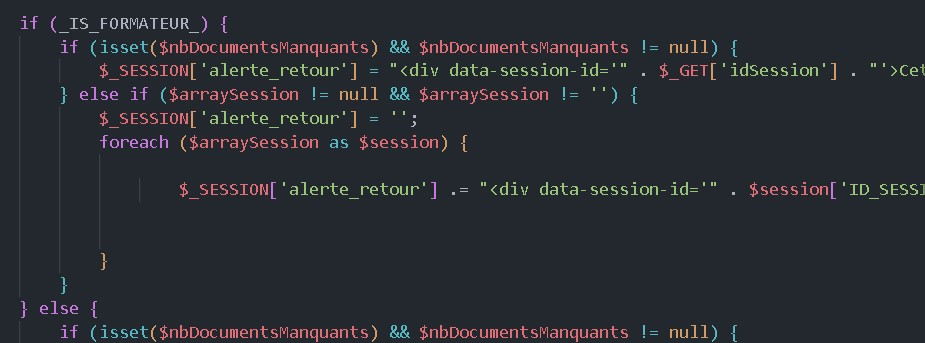
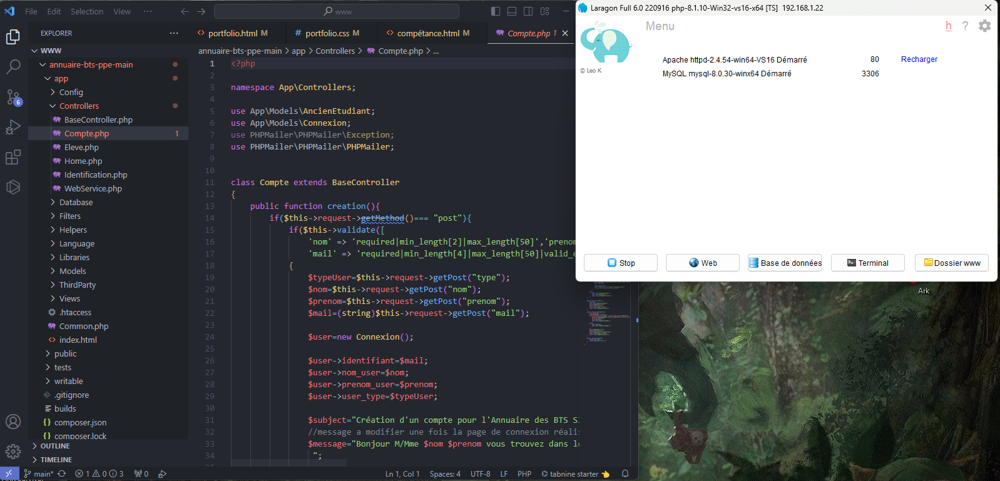

| Gérer le patrimoine informatique |
Mettre en place et vérifier les niveaux d'habilitation associées à un service |
Les droits mis en place correspondent aux habilitations des acteurs. |
 |
| Répondre aux incidents et aux demandes d'assitance et d'évolution |
Traiter des demandes concernant les applications |
Une solution à l’incident est trouvée et mise en oeuvre. |
 |
| Développer la présence en ligne de l'organisation d'un projet |
Participer àlévolution d'un site Web exploitant les donnée de l'organisations |
Le site Web à évoluer conformément au besoins exprimé |
 |
| Mettre à disposition des utilisateurs un service informatique |
Déployer un service |
Le service déployé est opérationnel et donne satisfaction à l’utilisateur. |
 |
| Organiser son développement professionnel |
Mettre en place son environnements personel |
L’environnement d’apprentissage personnel est délimité et expliqué. |
 |